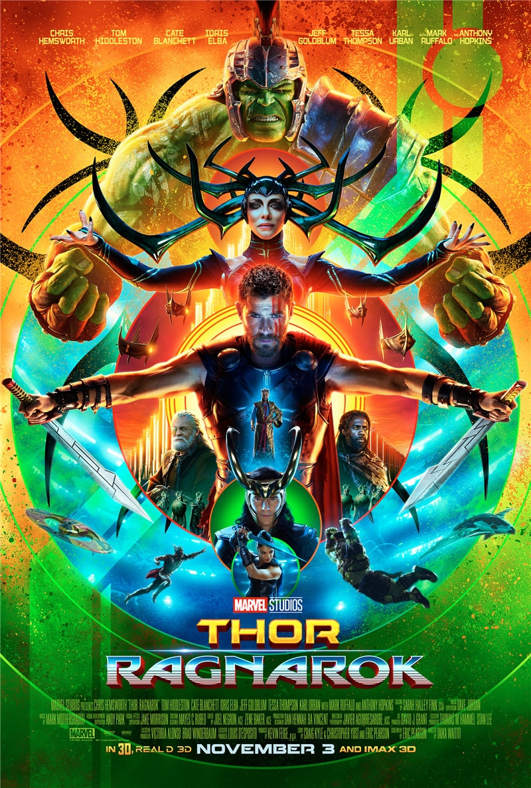

«Тор: Раґнарок» (англ. Thor: Ragnarok) — американський супергеройський фільм, заснований на однойменних коміксах видавництва Marvel Comics. Виробництвом займається Marvel Studios.

Тор, сидячи в клітці, розповідає як він покинув Землю в пошуках Каменів Вічності. Його «слухачем» виявляться скелет іншого ув'язненого. Клітка відкривається і Тор опиняється перед демоном Суртуром, який пояснює зміст тривожних снів Тора — наближається Раґнарок. Демон розповідає, що Асґард буде знищено, щойно Суртур об'єднає свою корону з Незгасним вогнем. Також він каже богу грому, що Одіна немає у Асґарді. Суртур готується вбити Тора як єдиного спадкоємця трону Асґарду, але той прикликає свій молот і долає демона. Тор марно викликає Геймдалла, щоб той забрав його в Асґард та переслідуваний демонами врешті переноситься додому по мосту Біфрост, який тепер охороняє хвалькуватий Скердж. Прибувши в Асґард, Тор бачить, що його брата Локі шанують як рятівника, котрий віддав життя за Асґард. Він викриває обман — Локі видає себе за батька, та змушує брата вирушити з ним на Землю, де Одін був востаннє. Тор знаходить доктора Стівена Стренджа, котрий відправляє їх до батька в Норвегію. Одін пояснює, що Раґнарок вже почався. Він помирає і смерть дозволить його гордовитій жорстокій доньці Гелі вирватися з ув'язнення. Одін помирає, і вже скоро Гела виходить із в'язниці та розламує молот Тора. Локі з Тором тікають через Біфрост на Асґард, але Гела кидається навздогін і дорогою між світами викидає їх у космос. Тор опиняється на планеті-звалищі Сакаар, де його схоплює найманка «142». Вона доставляє його до правителя планети, Ґросмайстра, до якого Локі вже встиг втертися в довіру, прибувши раніше. Тору доводиться стати гладіатором на арені Змагань чемпіонів. Тим часом Гела узурповує владу в Асґарді, оголосивши себе єдиною живою спадкоємицею трону та вбивши всіх вірних Одіну. Вона оживлює Незгасним вогнем свою армію і робить Скерджа катом. Геймдалл же потай викрадає меч, що керує Біфростом, і збирає повстанців. Ґросмайстер обіцяє відправити Тора додому, якщо він здолає його найкращого бійця. Перед боєм Тор впізнає за татуюванням у «142-ій» одну з Валькірій, що в давнину обороняли Асґард. Противником Тора виявляється Халк, якого Тор перемагає, викликавши блискавку. Проте Ґросмайстер паралізує Тора, віддавши перемогу Халку. Тор намагається переконати Халка і Валькірію допомогти врятувати Асґард, але ті не відгукуються. Незабаром йому вдається втекти з палацу і знайти літак «П'ятикрил», який привів Халка в Сакаар. Халк ламає літак намагаючись добратися до Тора, але запис відео з Наташею Романовою перетворює його на Брюса Беннера, повернувши здоровий глузд. Ґросмайстер доручає Локі та Валькірії знайти Халка. Тор переконує Валькірію вирушити на бій з Гелою, до нього приєднуються Локі й Брюс. Аби скористатися червоточиною над планетою, вони підбурюють гладіаторів на бунт і пробиваються до космічного корабля. Перед відльотом Локі намагається зрадити брата, але Тор паралізує його. Тор, Беннер і Валькірія долітають до Асґарда, де армія Гели розшукує меч Геймдалла. Бенер знову стає Халком і бореться поряд з Валькірією з вовком Фенріром і воїнами Гели. Тим часом Тор сходиться у двобої з Гелою. Коли Геймдалл і його союзники майже програють, на допомогу приходить Локі з повсталими гладіаторами. Тор програє двобій і втрачає око, але дух батька підбадьорює його. Одін каже, що Мйольнір не був джерелом сили Тора, а лише скеровував її. Він дає зрозуміти сину, що Асґард не точка у просторі, а люди. Тор сповнюється силою та продовжує боротьбу. Він розуміє, що повинен знищити Асґард, адже він живить Гелу. Жителі Асґарду евакуюються на кораблі гладіаторів. Скердж ховається серед них, але розкаявшись при нападі солдатів Гели, прикриває людей, поки не гине від меча Гели. Локі знаходить корону Суртура і кладе її у Незгасний вогонь. Суртур відроджується та нищить Асґард разом із Гелою. Тор і інші асгардійці вирушають на гладіаторському кораблі на Землю. Тор нарешті стає Королем Асґарду. У першій сцені після титрів корабель асгардійців натикається на корабель Таноса. У другій сцені після титрів Ґросмайстер зустрічає групу своїх бунтівних підданих.
«Людина-павук: Повернення додому» (2017)
«Месники: Війна нескінченності» (2018)
«Людина-павук: Далеко від дому» (2019)